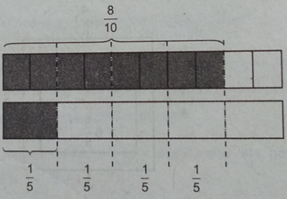
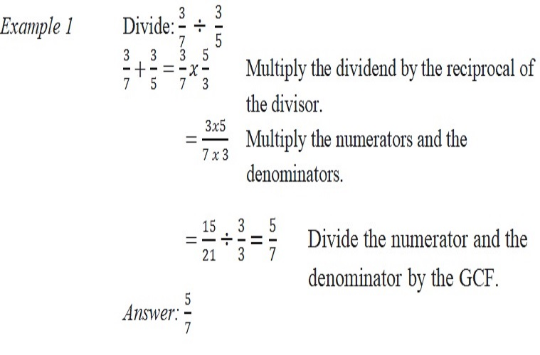

ENGAGE
An 8/10 m piece of wood is cut equally into shorter pieces of 1/5 m each. How many shorter pieces will there be?
Based on the model, we can say that 1/5 fits into 8/10 four times.
Therefore, we can write the division equation as
8/10+1/5=4
Hence, there are four pieces of 1/5 m of wood.
EXPLAIN
Reciprocals
If the product of two numbers is 1, then they are reciprocals or multiplicative inverse of each other. To find the reciprocal of a fraction, interchange the numerator and denominator.
Let us take 2/3. The reciprocal of 2/3 is 3/2. Multiplying the number and its reciprocal, we have 2/3 x 3/2=6/6=1. So, 2/3 and 3/2 are reciprocals or the multiplicative inverse of each other.
Dividing Fractions
To divide fractions, rewrite the division as a related multiplication in which you multiply the dividend by the reciprocal of the divisor.
